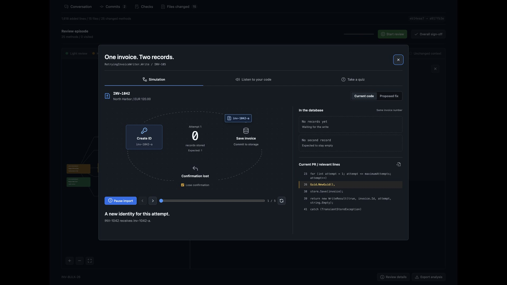

Beyond the Diff.
AI writes code faster than we can understand it.
Review should close that gap.
Evidence you can check.A decision you own.
AI writes code faster than we can understand it.
Review should close that gap.
AI interprets intent. Program analysis checks code facts. Neither gives approval.
Available evidence supports lighter review.
Green can include meaningful behaviour changes.
An intended business rule is undecided.
Confirm the duplicate-handling policy.
A concrete contradiction needs attention.
A retry stores the same invoice twice.
A dependency or contract cannot be inspected.
Supply the real tax-provider implementation.
Orange asks for a decision. Gray asks for evidence.
Evidence-backed confidence, not change complexity. A score cannot override a concrete failure.
1,618 added lines. 15 files.
87passing checks
1deliberate failure
A lost acknowledgement triggers a retry with a new identity.
See it. Hear it. Test your understanding.
Watch the 2:36 demo
Real Roslyn analysis and executable checks. AI judgments and confidence are authored demo inputs,
not a live model evaluation or calibrated reliability measurements. The playground runs locally.

Source code
github.com/Krish-Waghresha/TietoPrototype video
youtu.be/O6kLhf_FrNc